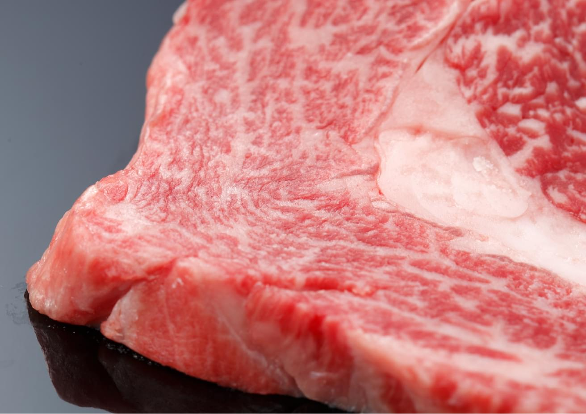

人が食べても体によい
漢方ハーブの飼料で育てる。
【原稿リライト予定】健康な牛を育て、牛肉本来のおいしさをつくるために、14種類のハーブをブレンドしたオリジナルの飼料を開発。肥育の仕上げに約８か月食べさせています。出来上がる肉の質を吟味しながら試行錯誤を重ねて生み出したまさに漢方和牛のおいしさの決め手です。

【原稿リライト予定】健康な牛を育て、牛肉本来のおいしさをつくるために、14種類のハーブをブレンドしたオリジナルの飼料を開発。肥育の仕上げに約８か月食べさせています。出来上がる肉の質を吟味しながら試行錯誤を重ねて生み出したまさに漢方和牛のおいしさの決め手です。
【原稿リライト予定】漢方は、人を健康に保ち自然治癒力を高める東洋の知恵。「福島の二本松に漢方卵というのがあった。桑の葉などいろいろなものが使われた餌で、鶏舎ににおいがなかった。これはいいと感じもらって牛に食べさせてみたら、食べた。これはいけると思ったよ」
人にいいものは牛にも良いはず。研究を重ね、4種類、7種類と増やしていき、最終的に14種類に。「米ぬかとえごまが特に旨みを作るんだ」肉の質を吟味しながら試行錯誤を重ね、今のブレンドに落ち着きました。関村場長の情熱の結晶です。
この文章はダミーですこの文章はダミーですこの文章はダミーですこの文章はダミーですこの文章はダミーですこの文章はダミーですこの文章はダミーですこの文章はダミーですこの文章はダミーですこの文章はダミーですこの文章はダミーですこの文章はダミーです
この文章はダミーですこの文章はダミーですこの文章はダミーですこの文章はダミーですこの文章はダミーですこの文章はダミーですこの文章はダミーですこの文章はダミーですこの文章はダミーですこの文章はダミーですこの文章はダミーですこの文章はダミーです
この文章はダミーですこの文章はダミーですこの文章はダミーですこの文章はダミーですこの文章はダミーですこの文章はダミーですこの文章はダミーですこの文章はダミーですこの文章はダミーですこの文章はダミーですこの文章はダミーですこの文章はダミーです
〒987-2233 宮城県栗原市築館照越永平1-1
TEL.0228-22-3110 FAX.0228-22-3301